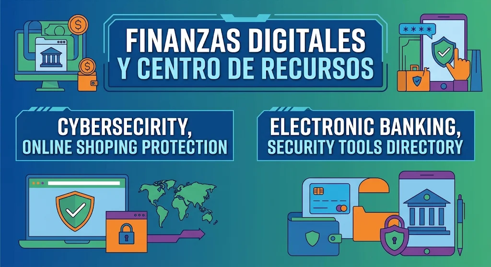

FINANZAS DIGITALES Y CENTRO DE RECURSOS |
|---|
|
 |
PROTECCIÓN FINANCIERA Y HERRAMIENTAS
La gestión de finanzas digitales requiere un nivel superior de precaución debido al impacto directo que puede tener en el patrimonio personal. Es
esencial saber cómo proteger las transacciones en línea, verificar servicios de banca electrónica y utilizar herramientas avanzadas para
prevenir el fraude monetario.
|
Resumen estructurado mediante listas ordenadas sobre el uso seguro de tu dinero y recursos de protección en la red.
Compras Online |
Para asegurar las transacciones en el comercio electrónico, se recomienda seguir los siguientes pasos:
|
Banca Electrónica |
Para proteger el acceso a tus servicios bancarios en línea, es fundamental aplicar las siguientes medidas:
|
Directorio de Recursos |
Para mantener un centro de recursos eficaz ante incidentes y auditorías de seguridad, considera las siguientes acciones:
|
| Volver al Índice Principal |
|---|